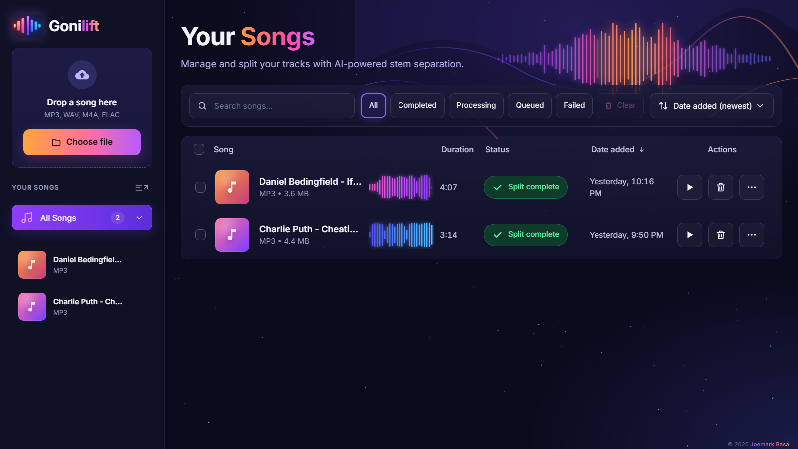

An offline vocal remover for Windows
Many people search for an offline vocal remover for the same three reasons: they don't want to upload their music, they don't want another subscription, and they want it to work anywhere, including on a laptop with no Wi-Fi. Here's what to look for, and a free option that ticks every box.
Online vs offline: what actually changes
| Typical online remover | Offline (Gonilift) | |
|---|---|---|
| Your song | Uploaded to a server | Never leaves your PC |
| Limits | Free tries, then a monthly cap or paywall | None |
| Account | Usually required | Not needed |
| Internet | Always | Only to install |
| Speed | Depends on their queue | Depends on your PC (about 40 s per song with an NVIDIA RTX 3050) |
What you need
- Windows 10 or 11
- About 6 GB of free disk space
- An NVIDIA graphics card for speed (optional; it runs on the processor too, just slower)
- Internet once, to install and to download the AI model the first time
Is it really offline?
Yes. We tested Gonilift with every outside connection blocked: it split a 3-minute song and changed its key with zero attempts to reach the internet. Its font is bundled, and it only listens on your own computer.

Set it up in three steps
- Download the ZIP and unzip it outside OneDrive.
- Double-click
install.bat. It installs a private copy of Python and the AI engine inside the folder, without touching anything else. - Open Gonilift from your Desktop or Start menu and drop in a song.
Does anything run in the background?
No. Closing the window stops everything. There's no tray icon, no auto-updater and no service left running.